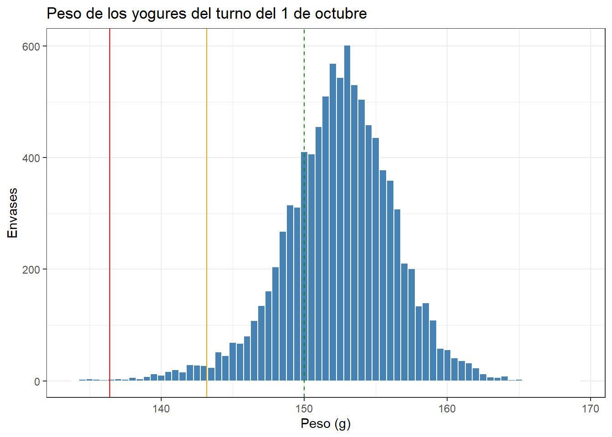
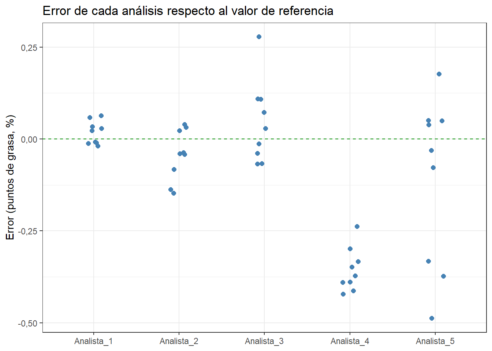
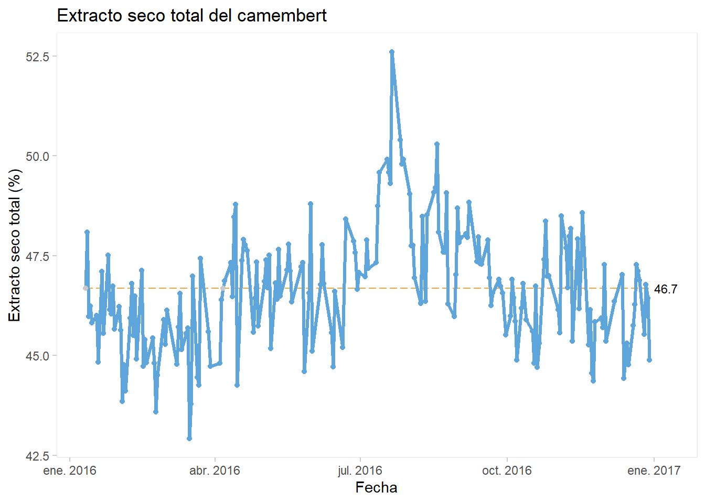
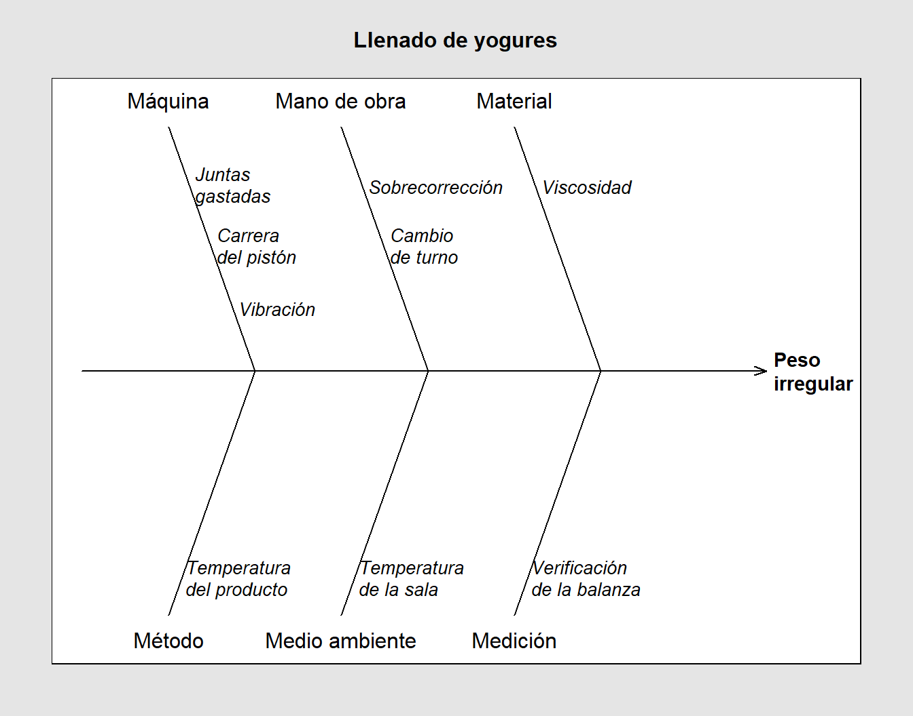
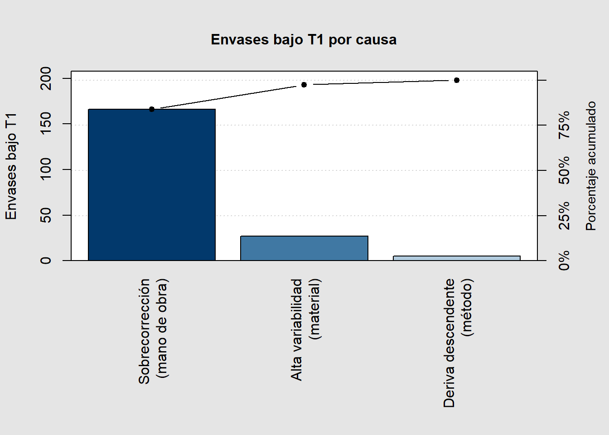
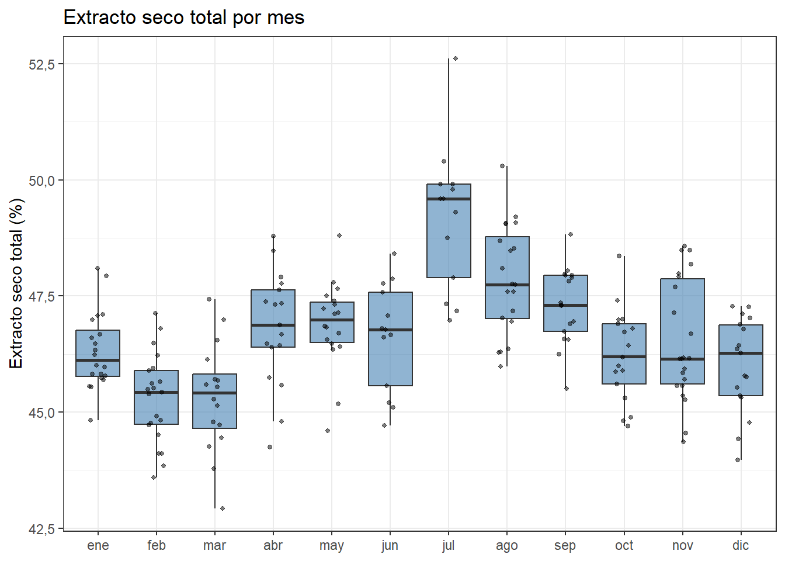
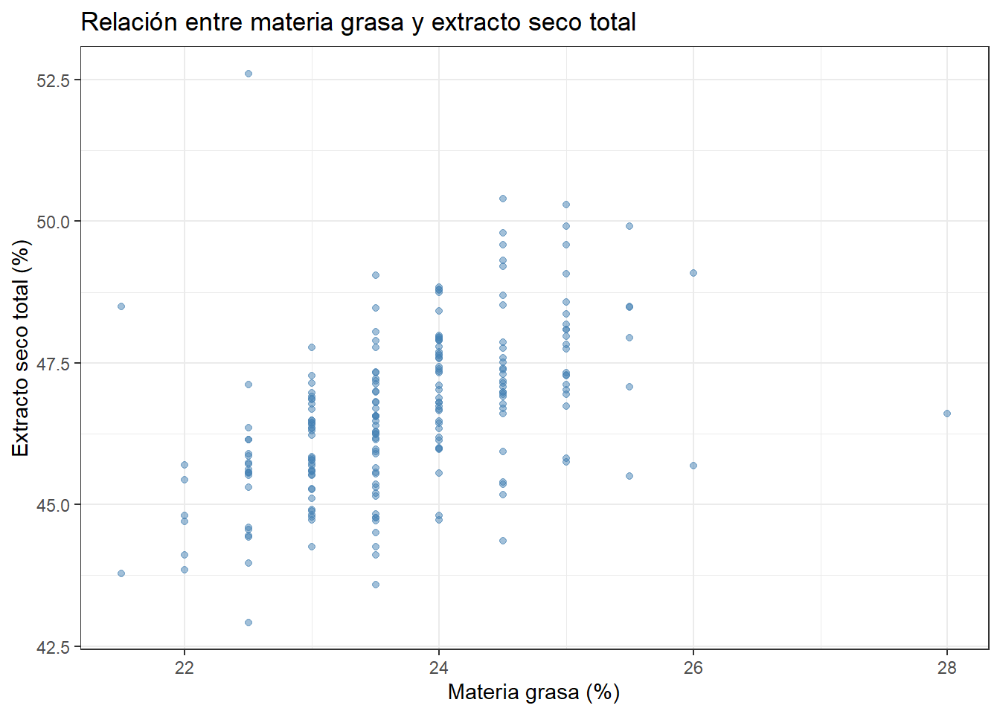
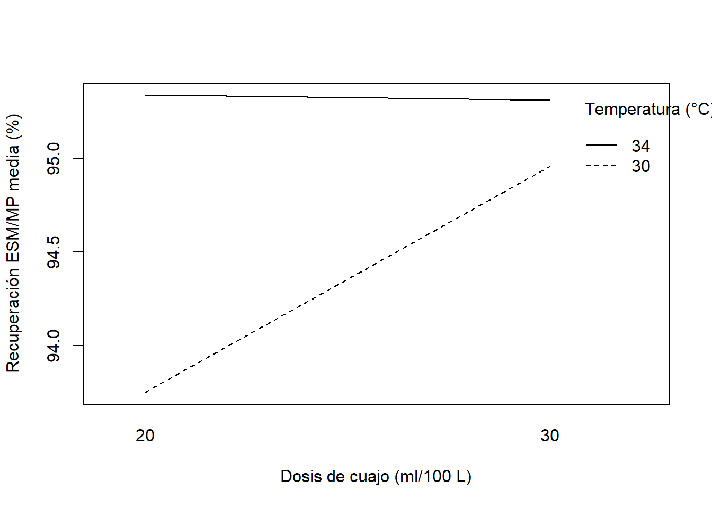
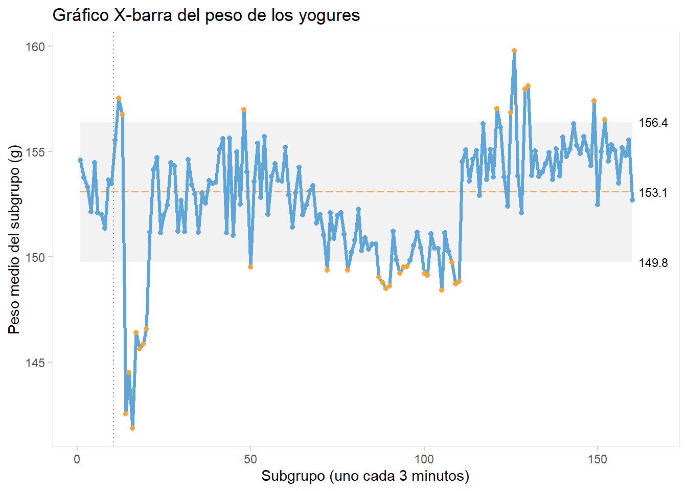

flowchart LR D["<b>Definir</b><br/>¿Cuál es exactamente<br/>el problema?<br/><br/>1 Definición del problema<br/>2 SIPOC"] M["<b>Medir</b><br/>¿Cómo se comporta<br/>el proceso hoy?<br/><br/>3 Plan de recogida<br/>4 Histograma<br/>5 Valores individuales<br/>6 Gráfico de rachas<br/>7 Capacidad"] A["<b>Analizar</b><br/>¿Cuál es la causa raíz?<br/><br/>8 Causa-efecto<br/>9 Cinco porqués<br/>10 Pareto<br/>11 Boxplot por grupos<br/>12 Dispersión<br/>13 Interacción"] I["<b>Mejorar</b><br/>¿Qué solución<br/>elimina la causa?<br/><br/>14 ¿Cuántos fuera?<br/>15 Poka-yoke y<br/>estandarización"] C["<b>Controlar</b><br/>¿Cómo mantenemos<br/>la mejora?<br/><br/>16 Gráfico de control<br/>17 Plan de control"] D --> M --> A --> I --> C
17 La caja de herramientas de la mejora continua
Fichas prácticas con R, ordenadas según el ciclo DMAIC
NotaObjetivos de aprendizaje
Al finalizar este capítulo, el alumno será capaz de:
- Elegir la herramienta adecuada para cada fase de un proyecto de mejora.
- Construir con unas pocas líneas de R los gráficos básicos de la mejora continua: histograma, valores individuales, gráfico de rachas, Pareto, causa-efecto, boxplot por grupos, dispersión, interacción y gráfico de control.
- Leer cada gráfico y reconocer sus errores de uso más frecuentes.
- Aplicar las herramientas en secuencia a un problema real de proceso.
Conceptos clave: DMAIC, ficha de herramienta, lista de comprobación, plan de recogida de datos, cinco porqués, Pareto, causa-efecto, estratificación, plan de control.
17.1 Cómo usar este capítulo
Este capítulo no se lee de principio a fin: se consulta. Cada herramienta tiene una ficha con el mismo formato, inspirado en las guías de bolsillo de Lean Six Sigma (Brook 2010):
- una frase clave, que resume cuándo pensar en esa herramienta;
- un recuadro con para qué sirve, cuándo usarla y qué datos necesita;
- el código R, lo más corto posible, que se puede copiar y adaptar cambiando el nombre del archivo y de las columnas;
- cómo se lee el gráfico en el ejemplo, y un aviso con los errores de uso más frecuentes;
- el capítulo del libro donde se vio la herramienta con más detalle.
Todas las fichas usan datos del libro, que están en la carpeta datos/. Cada bloque de código es independiente: carga sus paquetes y sus datos, de modo que se puede copiar una ficha sin las demás. Los paquetes necesarios son tidyverse, qcc y qicharts2; si alguno no está instalado, se instala una sola vez con install.packages("qcc").
Las fichas se agrupan en las cinco fases del ciclo DMAIC que vimos en el capítulo 16. Al final de cada fase hay una lista de comprobación para revisar el trabajo antes de pasar a la siguiente, y al final del capítulo, un caso completo que recorre todas las fases con el turno de yogures de los capítulos 9 y 14.
17.2 Definir
La fase Definir responde a una pregunta: ¿cuál es exactamente el problema? Su resultado es una definición breve, cuantificada y acotada, y un objetivo que se pueda verificar.
Ficha 1. Definición del problema y objetivo SMART
Si no cabe en tres frases y no tiene cifras, todavía no es una definición.
Para qué sirve: fijar qué se va a resolver, cuánto cuesta y cómo sabremos que está resuelto.
Cuándo usarla: al empezar cualquier proyecto de mejora, antes de recoger datos.
Qué datos necesita: las cifras del problema (cuántos, cuánto, desde cuándo) y, si es posible, su coste.
Plantilla:
| Elemento | Pregunta |
|---|---|
| Qué | ¿Qué falla, en qué producto y en qué línea? |
| Cuánto | ¿Cuántas unidades, qué porcentaje, cuánto dinero? |
| Cuándo | ¿Desde cuándo, en qué turnos? |
| Objetivo | ¿Qué cifra queremos alcanzar y en qué plazo? |
Ejemplo (turno de yogures, capítulo 14): «En el turno del 1 de octubre de 2024 de la línea de yogures de 150 g, 198 de los 9.600 envases (2,1 %) quedaron por debajo de T1 y 14 por debajo de T2, por lo que el lote no es conforme con el RD 1801/2008. Objetivo: proceso estable, sin envases bajo T2 y con un \(C_{pk} \geq 1{,}33\) frente a T1 en todos los turnos, antes de fin de año.»
El objetivo es SMART: específico (la línea de 150 g), medible (envases bajo T1 y T2, \(C_{pk}\)), alcanzable (las etapas de mejora del capítulo 14 lo alcanzan), relevante (cumplimiento legal) y acotado en el tiempo (fin de año).
AdvertenciaAtención
- «Hay que mejorar el peso» no es una definición: no dice cuánto ni dónde.
- La definición describe el problema, no la solución ni el culpable: «el operario ajusta mal» es una hipótesis sobre la causa, y se comprueba en Analizar.
Lo vimos en: capítulo 16 (definir el problema) y capítulo 14 (el turno del 1 de octubre).
Ficha 2. SIPOC
Antes de medir un proceso, hay que saber dónde empieza y dónde acaba.
Para qué sirve: delimitar el proceso que se va a estudiar: quién aporta qué (proveedores y entradas), qué pasos tiene, qué produce y para quién (salidas y clientes).
Cuándo usarla: en Definir, para que todo el equipo comparta la misma idea del proceso.
Qué datos necesita: ninguno numérico; el conocimiento del proceso.
Ejemplo (esquema simplificado de la línea de yogures):
| Proveedores | Entradas | Proceso | Salidas | Clientes |
|---|---|---|---|---|
| Elaboración (cuba de yogur) | Producto con su viscosidad y temperatura | 1. Recepción de la cuba | Envases de 150 g | Distribución y consumidor |
| Proveedor de envases | Envases y tapas | 2. Llenado | Registros de peso | Inspección (RD 1801/2008) |
| Mantenimiento | Llenadora ajustada | 3. Sellado | Control de calidad | |
| 4. Control de peso | ||||
| 5. Paletizado |
AdvertenciaAtención
- El SIPOC se hace a alto nivel: cinco a siete pasos como máximo. El detalle de cada paso viene después.
- Las entradas son lo que puede variar y afectar al resultado (aquí, la viscosidad del producto): son las primeras candidatas a causa.
Lo vimos en: capítulo 14 (las causas del turno estaban en las entradas y en el llenado).
Lista de comprobación: Definir
17.3 Medir
La fase Medir responde a la pregunta ¿cómo se comporta el proceso hoy? Antes de buscar causas hay que tener datos fiables, ver su forma, comprobar si el proceso es estable y cuantificar su capacidad.
Ficha 3. Plan de recogida de datos y definiciones operativas
Un dato que cada persona mide a su manera no es un dato.
Para qué sirve: decidir qué se mide, cómo, cuándo y quién lo mide, para que los datos sean comparables y se puedan analizar.
Cuándo usarla: antes de empezar a recoger datos.
Qué datos necesita: ninguno; es el plan para obtenerlos.
Una definición operativa describe la medida con tanta precisión que dos personas distintas obtendrían el mismo resultado.
Ejemplo (llenado de yogures):
| Variable | Definición operativa | Unidad | Frecuencia | Quién |
|---|---|---|---|---|
peso_g |
Peso neto del envase cerrado, en la balanza de control, descontando la tara media del envase y la tapa | g | 5 envases cada 3 minutos | Operario de línea |
hora_envasado |
Hora de llenado del envase | hh:mm:ss | Cada envase | Registro automático |
| Temperatura del producto | Temperatura en el depósito de alimentación | °C | Cada hora | Operario de línea |
Los datos se registran en formato ordenado (tidy data): una fila por envase y una columna por variable, como en llenado_yogures_muestra.csv.
AdvertenciaAtención
- Si cada turno pesa los envases de una forma distinta (con o sin tapa, en balanzas distintas), las diferencias entre turnos pueden ser de la medida y no del proceso.
- Recoger también el contexto (hora, turno, lote): sin él no se puede estratificar después (ficha 11).
Lo vimos en: capítulo 4 (datos ordenados) y capítulo 13 (sistema de medición).
Ficha 4. Histograma con límites
Para ver de un vistazo si un proceso cabe dentro de sus límites, piensa en un histograma.
Para qué sirve: ver la forma de los datos (centro, dispersión, asimetría, valores atípicos) y su posición respecto a los límites.
Cuándo usarlo: en Medir, con una variable continua y bastantes datos (al menos 50).
Qué datos necesita: una columna numérica; los límites, si los hay.
Código
library(tidyverse)
df <- read_csv2("datos/llenado_yogures.csv",
locale = locale(decimal_mark = ",", encoding = "ISO-8859-1"))
ggplot(df, aes(x = peso_g)) +
geom_histogram(binwidth = 0.5, fill = "steelblue", colour = "white") +
geom_vline(xintercept = 150, colour = "green4", linetype = "dashed") +
geom_vline(xintercept = 143.2, colour = "orange") +
geom_vline(xintercept = 136.4, colour = "red") +
labs(title = "Peso de los yogures del turno del 1 de octubre",
x = "Peso (g)", y = "Envases") +
theme_bw()
Cómo se lee:
- La mayor parte de los envases está entre 145 y 160 g, con la media (152,45 g) por encima de Qn.
- La cola izquierda llega por debajo de T1 y de T2: 198 envases bajo T1 y 14 bajo T2.
- Una cola tan larga en un solo lado hace sospechar que hubo momentos del turno con un comportamiento distinto. El histograma no dice cuándo: para eso están las fichas 6 y 16.
AdvertenciaAtención
- Con pocos datos (menos de 50) la forma del histograma depende demasiado del ancho de las barras: mejor la ficha 5.
- El histograma no muestra el orden en el tiempo. Un proceso puede tener un histograma perfecto y estar cambiando a lo largo del turno.
Lo vimos en: capítulo 5 (histograma) y capítulo 14 (el turno completo).
Ficha 5. Valores individuales: sesgo y repetibilidad
Con pocos datos por grupo, dibuja cada dato: nada se esconde.
Para qué sirve: comparar grupos pequeños dibujando todos sus valores. Aplicado a los análisis de laboratorio, muestra a la vez el sesgo (dónde está el centro de cada analista) y la repetibilidad (cuánto se dispersan sus resultados).
Cuándo usarlo: cuando cada grupo tiene pocos datos (menos de 25), y en particular para evaluar un sistema de medida.
Qué datos necesita: una columna numérica y una columna con el grupo; para el sistema de medida, el valor de referencia de cada muestra.
Código
library(tidyverse)
df <- read_csv2("datos/grr_gerber.csv",
locale = locale(decimal_mark = ",", encoding = "ISO-8859-1"))
df <- df |> mutate(error = resultado - valor_referencia)
ggplot(df, aes(x = analista, y = error)) +
geom_hline(yintercept = 0, colour = "green4", linetype = "dashed") +
geom_jitter(width = 0.1, size = 2, colour = "steelblue") +
scale_y_continuous(labels = scales::label_number(decimal.mark = ",")) +
labs(title = "Error de cada análisis respecto al valor de referencia",
x = NULL, y = "Error (puntos de grasa, %)") +
theme_bw()
Cómo se lee:
- La línea discontinua es el error cero. Un analista sin sesgo tiene sus puntos repartidos alrededor de ella.
- El analista 4 tiene todos sus puntos juntos y por debajo de la línea: es repetible, pero tiene un sesgo de unos −0,36 puntos.
- El analista 5 tiene los puntos muy dispersos: su problema es la repetibilidad (desviación típica de unos 0,23 puntos), no un desplazamiento fijo.
- Los dos problemas se corrigen de forma distinta: el sesgo, con una causa concreta (la lectura del menisco); la falta de repetibilidad, revisando todo el procedimiento.
AdvertenciaAtención
- Cada analista tiene aquí 9 resultados. Con tan pocos datos, un boxplot daría cuartiles poco fiables: los puntos individuales son más honestos.
- Restar el valor de referencia permite juntar en un solo gráfico muestras con contenidos de grasa distintos.
Lo vimos en: capítulo 13 (análisis del sistema de medición).
Ficha 6. Estabilidad: gráfico de rachas
Antes de calcular límites o índices, mira si el proceso es el mismo de principio a fin.
Para qué sirve: ver la evolución de una variable en el tiempo respecto a su mediana, y detectar si el proceso ha cambiado (desplazamientos, tendencias, ciclos).
Cuándo usarlo: en Medir, con datos en orden cronológico, antes de calcular la capacidad o los límites de control.
Qué datos necesita: una columna numérica y otra con el orden o la fecha.
Código
library(tidyverse)
library(qicharts2)
df <- read_csv2("datos/camembert.csv",
locale = locale(decimal_mark = ",", encoding = "ISO-8859-1")) |>
mutate(fecha = dmy(fecha))
qic(x = fecha, y = est, data = df, chart = "run",
title = "Extracto seco total del camembert",
ylab = "Extracto seco total (%)", xlab = "Fecha")
Cómo se lee:
- La línea central es la mediana: la mitad de los valores queda por encima y la otra mitad por debajo.
- En un proceso estable, los puntos cruzan la mediana a menudo y no forman rachas largas a un mismo lado. Si
qicharts2detecta una racha demasiado larga o pocos cruces, dibuja la línea central discontinua y en color. - En los meses de verano los valores quedan por encima de la mediana durante semanas: el extracto seco cambió a lo largo del año. En el capítulo 12, el equipo lo atribuyó al ajuste estacional de la fabricación y a la sustitución del quesero en vacaciones.
AdvertenciaAtención
- El gráfico de rachas no tiene límites de control: sirve para saber si el proceso es estable, no para vigilarlo turno a turno (para eso está la ficha 16).
- Los días con dos fabricaciones se representan con su media.
Lo vimos en: capítulo 9 (señales de alarma) y capítulo 12 (serie temporal del extracto seco).
Ficha 7. Capacidad del proceso
¿Cabe el proceso en sus límites con margen? Calcula el Cpk.
Para qué sirve: cuantificar si la variabilidad natural del proceso es compatible con los límites de especificación, teniendo en cuenta su centrado.
Cuándo usarla: en Medir, para tener la línea base, y en Controlar, para comprobar la mejora. Solo con el proceso estable (ficha 6).
Qué datos necesita: una columna numérica de un periodo estable y los límites de especificación.
Código
library(tidyverse)
df <- read_csv2("datos/llenado_yogures_muestra.csv",
locale = locale(decimal_mark = ",", encoding = "ISO-8859-1"))
fase1 <- filter(df, muestra <= 10) # 08:00 a 08:30, sin incidentes (capítulo 9)
media <- mean(fase1$peso_g)
s <- sd(fase1$peso_g)
T1 <- 143.2
Cpk <- (media - T1) / (3 * s)
Cpk[1] 1.315754Cómo se lee:
- Con media 153,08 g y desviación típica 2,50 g, el \(C_{pk}\) frente a T1 es 1,32: prácticamente el 1,33 que se suele exigir.
- Aquí solo hay un límite, el inferior (T1), por eso solo se calcula el \(C_{pk}\) de ese lado. El \(C_p\) necesita los dos límites: \(C_p = (LSE - LIE) / 6\sigma\).
- Para que \(C_{pk} \geq 1{,}33\), la media debe estar al menos a \(4\sigma\) del límite.
AdvertenciaAtención
- Un \(C_{pk}\) calculado con un proceso inestable no significa nada: describe una mezcla de procesos distintos.
- El \(C_{pk}\) de la Fase I describe lo que el proceso puede hacer, no lo que hizo: en el turno completo hubo un 2,1 % de envases bajo T1 por las causas especiales.
Lo vimos en: capítulo 9 (índices \(C_p\) y \(C_{pk}\)).
Lista de comprobación: Medir
17.4 Analizar
La fase Analizar responde a la pregunta ¿cuál es la causa raíz? Tiene dos puertas de entrada, que se usan juntas:
- la puerta del proceso (fichas 8 y 9): lo que sabe el equipo sobre cómo funciona el proceso;
- la puerta de los datos (fichas 10 a 13): lo que dicen los datos.
Las ideas que salen de la primera son hipótesis; los datos de la segunda las confirman o las descartan.
Ficha 8. Diagrama causa-efecto (Ishikawa)
Para no olvidar ninguna causa posible, ordénalas en las 6M.
Para qué sirve: ordenar las posibles causas de un problema en grupos (las 6M), para no olvidar ninguna.
Cuándo usarlo: al empezar a analizar un problema, normalmente en una reunión del equipo.
Qué datos necesita: ninguno numérico; solo el conocimiento del proceso de las personas que trabajan en él.
Recogemos en el diagrama las causas que identificamos en el diagnóstico del turno de yogures (capítulo 14): el desgaste de las juntas, la carrera del pistón y la vibración de la bomba (máquina); la sobrecorrección del operario y el cambio de turno sin protocolo (mano de obra); la viscosidad del nuevo lote de producto (material), y la falta de control de la temperatura del producto (método). Añadimos la temperatura de la sala (medio ambiente) y la verificación de la balanza (medición), que hay que revisar aunque no expliquen ningún incidente concreto.
Código
library(qcc)
# "\n" parte un texto en dos líneas, para que no se solape con la espina siguiente
cause.and.effect(
cause = list(
"Máquina" = c("Juntas\ngastadas", "Carrera\ndel pistón", "Vibración"),
"Mano de obra" = c("Sobrecorrección", "Cambio\nde turno"),
"Material" = c("Viscosidad"),
"Método" = c("Temperatura\ndel producto"),
"Medio ambiente" = c("Temperatura\nde la sala"),
"Medición" = c("Verificación\nde la balanza")),
effect = "Peso\nirregular",
title = "Llenado de yogures",
cex = c(1, 0.85, 0.9)) # tamaño de las categorías, las causas y el efecto
Cómo se lee:
- Cada espina es un grupo de causas (una de las 6M); en ella se anotan las causas concretas.
- El diagrama no demuestra nada: es una lista ordenada de hipótesis. Cada causa hay que comprobarla con datos, por ejemplo con un gráfico de control o con un diagrama de Pareto.
AdvertenciaAtención
- No es una lista de culpables («el operario»). La causa no es la persona, sino lo que le falta: un procedimiento, una formación, un criterio de ajuste.
- Las causas deben ser concretas («juntas gastadas») y no vagas («la máquina»).
- Si un grupo no tiene causas, se deja vacío: no hay que rellenar todas las espinas por obligación.
- El diagrama no reparte el texto en varias líneas y las causas largas se solapan: basta con dos o tres palabras; la explicación va en el texto o en una tabla aparte.
Lo vimos en: capítulo 14 (diagnóstico 6M) y capítulo 15 (las fuentes de variabilidad).
Ficha 9. Los cinco porqués
Pregunta «¿por qué?» hasta llegar a algo que se pueda cambiar.
Para qué sirve: pasar de un síntoma a su causa raíz encadenando preguntas.
Cuándo usarla: cuando ya se ha localizado dónde está el problema (por ejemplo, con un Pareto) y hay que entender por qué ocurre.
Qué datos necesita: ninguno numérico; el conocimiento del proceso y los registros del suceso.
Ejemplo (los envases bajo T2 del turno, capítulo 14):
| Pregunta | Respuesta |
|---|---|
| ¿Por qué el lote no es conforme? | Porque hubo 14 envases bajo T2, 12 de ellos entre las 08:39 y las 09:03. |
| ¿Por qué hubo envases bajo T2 a esa hora? | Porque la media del llenado cayó por debajo de T1. |
| ¿Por qué cayó la media? | Porque el operario bajó la dosificación de golpe para compensar la deriva ascendente de las 08:30. |
| ¿Por qué corrigió tanto? | Porque no tenía un criterio escrito de cuánto se puede corregir en cada ajuste. |
| ¿Por qué hubo que corregir? | Porque la llenadora deriva, probablemente por desgaste de las juntas o del pistón. |
Las dos últimas respuestas llevan a dos acciones distintas: un criterio de ajuste escrito (ficha 15) y el mantenimiento preventivo de la llenadora.
AdvertenciaAtención
- Cinco es orientativo: se para cuando se llega a una causa sobre la que se puede actuar.
- Cada respuesta debe apoyarse en datos o en registros, no en suposiciones. Aquí, la última respuesta es una hipótesis que hay que comprobar.
- Si la cadena termina en una persona («el operario se equivocó»), hay que seguir preguntando: ¿qué le faltaba para no equivocarse?
Lo vimos en: capítulo 14 (el diagnóstico del turno).
Ficha 10. Diagrama de Pareto
Cuando hay muchas causas y poco tiempo, empieza por la más grande.
Para qué sirve: ordenar las causas de un problema de mayor a menor importancia, para decidir por dónde empezar.
Cuándo usarlo: cuando hay varias causas posibles y no se puede actuar sobre todas a la vez.
Qué datos necesita: una lista de causas y, para cada una, cuántas veces aparece o cuánto cuesta.
En el turno de yogures del 1 de octubre (capítulo 14) hubo 198 envases por debajo de T1. Los clasificamos según el incidente que los produjo:
Código
library(qcc)
# Envases bajo T1 de cada incidente del turno (capítulo 14)
bajo_T1 <- c("Sobrecorrección\n(mano de obra)" = 166,
"Alta variabilidad\n(material)" = 27,
"Deriva descendente\n(método)" = 5)
pareto.chart(bajo_T1,
main = "Envases bajo T1 por causa",
ylab = "Envases bajo T1",
ylab2 = "Porcentaje acumulado",
las = 1)
Cómo se lee:
- Las barras van de mayor a menor; la línea suma los porcentajes.
- Una sola causa, la sobrecorrección del operario, explica más de cuatro de cada cinco envases bajo T1 (166 de 198). Con la segunda, se llega al 97 %.
- Por ahí hay que empezar (ficha 9).
AdvertenciaAtención
- Contar frecuencias cuando lo que importa es el coste. Aquí los envases bajo T2 pesan más que los bajo T1, porque uno solo basta para rechazar el lote.
- Usar demasiadas categorías, o una categoría «Otros» tan grande que esconde las causas.
- Mezclar causas con síntomas («envase ligero» no es una causa).
Lo vimos en: capítulo 14 (incidentes del turno) y capítulo 15 (priorizar).
Ficha 11. Estratificación: boxplot por grupos
Cuando compares varios grupos de datos, piensa en un boxplot.
Para qué sirve: separar los datos por grupos (mes, turno, línea, operario, proveedor) y comparar su centro y su dispersión. Es la estratificación de Ishikawa.
Cuándo usarlo: cuando los datos mezclan situaciones distintas y queremos ver si alguna se comporta de otra manera.
Qué datos necesita: una columna numérica y una columna con el grupo.
Código
library(tidyverse)
df <- read_csv2("datos/camembert.csv",
locale = locale(decimal_mark = ",", encoding = "ISO-8859-1")) |>
mutate(fecha = dmy(fecha),
mes = month(fecha, label = TRUE))
ggplot(df, aes(x = mes, y = est)) +
geom_boxplot(fill = "steelblue", alpha = 0.6, outlier.shape = NA) +
geom_jitter(width = 0.15, size = 1, alpha = 0.5) +
scale_y_continuous(labels = scales::label_number(decimal.mark = ",")) +
labs(title = "Extracto seco total por mes",
x = NULL, y = "Extracto seco total (%)") +
theme_bw()
Cómo se lee:
- Cada caja contiene la mitad central de los datos del mes; la línea interior es la mediana, no la media. Los puntos son las fabricaciones; por eso se ocultan los atípicos de la caja (
outlier.shape = NA), que si no aparecerían dos veces. - Julio destaca: su mediana (49,59 %) es la más alta del año. Agosto y septiembre siguen por encima del resto (47,75 y 47,30 %); los demás meses están entre 45,4 y 47,0 %.
- Mezclados todos los meses, el valor de 52,61 % parecía un atípico. Separados por meses, se ve que forma parte de un verano con valores altos: la estratificación cambia la interpretación.
AdvertenciaAtención
- Con pocos datos por grupo (menos de unos 25), los cuartiles son poco fiables. Aquí cada mes tiene entre 13 y 22 fabricaciones: por eso se añaden los puntos individuales sobre las cajas.
- Si solo hay un grupo, un boxplot dice poco: mejor un histograma (ficha 4).
Lo vimos en: capítulo 5 (boxplot) y capítulo 12 (boxplot mensual del extracto seco).
Ficha 12. Diagrama de dispersión
Para saber si dos variables se mueven juntas, dibuja una frente a la otra.
Para qué sirve: ver si existe relación entre dos variables numéricas y medir su intensidad con el coeficiente de correlación.
Cuándo usarlo: cuando sospechamos que una variable del proceso influye en otra.
Qué datos necesita: dos columnas numéricas medidas en los mismos casos.
Código
library(tidyverse)
df <- read_csv2("datos/camembert.csv",
locale = locale(decimal_mark = ",", encoding = "ISO-8859-1"))
ggplot(df, aes(x = mg, y = est)) +
geom_point(alpha = 0.5, colour = "steelblue") +
labs(title = "Relación entre materia grasa y extracto seco total",
x = "Materia grasa (%)", y = "Extracto seco total (%)") +
theme_bw()
Código
cor(df$est, df$mg)[1] 0.4903122Cómo se lee:
- La nube sube de izquierda a derecha: los quesos con más materia grasa tienden a tener más extracto seco.
- El coeficiente de correlación es 0,49: una relación positiva moderada. La nube es ancha, así que la materia grasa explica solo una parte de las diferencias de extracto seco.
- Hay tres puntos alejados de la nube (capítulo 12) que conviene revisar antes de sacar conclusiones.
AdvertenciaAtención
- Correlación no implica causalidad: dos variables pueden moverse juntas porque las dos dependen de una tercera.
- Un coeficiente de correlación sin gráfico puede engañar: siempre hay que mirar la nube.
Lo vimos en: capítulo 8 (correlación) y capítulo 12 (dispersión est frente a mg).
Ficha 13. Gráfico de interacción
Si el efecto de un factor depende del otro, las líneas no son paralelas.
Para qué sirve: ver en un experimento con dos factores si el efecto de uno depende del nivel del otro (interacción).
Cuándo usarlo: para analizar un experimento diseñado, como el diseño factorial 2² del capítulo 10.
Qué datos necesita: los resultados del experimento, con una columna para cada factor y otra para la respuesta.
Código
library(tidyverse)
df <- read_csv2("datos/experimento_cuajo.csv",
locale = locale(decimal_mark = ","))
interaction.plot(x.factor = df$dosis_cuajo,
trace.factor = df$temperatura,
response = df$rendimiento_esm_pct,
xlab = "Dosis de cuajo (ml/100 L)",
ylab = "Recuperación ESM/MP media (%)",
trace.label = "Temperatura (°C)")
Cómo se lee:
- Cada línea es una temperatura; cada punto, la media de las fabricaciones con esa combinación.
- A 30 °C, subir la dosis de 20 a 30 ml/100 L mejora la recuperación en más de un punto (de 93,75 % a 94,96 %). A 34 °C la mejora desaparece (de 95,34 % a 95,31 %).
- Las líneas no son paralelas: hay interacción. El efecto de la dosis depende de la temperatura.
AdvertenciaAtención
- Este gráfico solo tiene sentido con datos de un experimento diseñado, en el que los factores se han fijado a propósito. Con datos históricos, otras variables pueden estar cambiando a la vez.
- Antes de concluir, hay que comparar las diferencias con la variabilidad entre réplicas (capítulo 10).
Lo vimos en: capítulo 10 (diseño de experimentos).
Lista de comprobación: Analizar
17.5 Mejorar
La fase Mejorar responde a la pregunta ¿qué solución elimina la causa raíz? Antes de implantar un cambio conviene estimar su efecto, y después hay que diseñarlo para que el error no pueda repetirse.
Ficha 14. ¿Cuántos quedarán fuera del límite?
Antes de cambiar el proceso, calcula qué ganarías.
Para qué sirve: estimar qué porcentaje de unidades quedará fuera de un límite con una media y una desviación típica dadas, para comparar escenarios de mejora.
Cuándo usarla: al evaluar una solución, antes de implantarla, y para fijar la media de trabajo.
Qué datos necesita: la media y la desviación típica del proceso (de la ficha 7) y el límite.
Código
# Porcentaje de envases bajo T1 = 143,2 g en tres escenarios (capítulo 9)
pnorm(143.2, mean = 153.1, sd = 2.5) * 100 # proceso estable actual[1] 0.003747488Código
pnorm(143.2, mean = 153.1, sd = 3.5) * 100 # si la desviación típica sube a 3,5 g[1] 0.2337813Código
pnorm(143.2, mean = 150, sd = 3.5) * 100 # y además la media baja a 150 g[1] 2.601671Cómo se lee:
- Con el proceso estable, la proporción esperada bajo T1 es prácticamente nula (0,004 %).
- Si la desviación típica sube a 3,5 g, sube al 0,23 %; si además la media baja a 150 g, llega al 2,6 %, por encima del 2,5 % de referencia.
- Reducir la variabilidad permite acercar la media a Qn sin aumentar el riesgo: es el ahorro de la etapa 2 del capítulo 14.
AdvertenciaAtención
- El cálculo supone que los datos siguen una distribución normal (compruébalo con un QQ-plot, capítulo 7) y que el proceso es estable.
- Las causas especiales no entran en el cálculo: con el proceso estable se esperaba un 0,004 % bajo T1, y en el turno real hubo un 2,1 %.
Lo vimos en: capítulo 7 (distribución normal), capítulo 9 (escenarios) y capítulo 14 (etapas de mejora).
Ficha 15. A prueba de errores (poka-yoke) y estandarización
La mejor solución es la que impide que el error vuelva a ocurrir.
Para qué sirve: convertir la causa raíz en una solución que no dependa de la memoria ni de la atención de las personas.
Cuándo usarla: al diseñar la solución, una vez confirmada la causa raíz.
Qué datos necesita: la causa raíz y el conocimiento del proceso.
De más a menos eficaz:
- Eliminar la posibilidad de error (poka-yoke): el proceso no permite equivocarse. Ejemplo: control de viscosidad en la recepción de cada cuba; si está fuera de rango, la cuba no se incorpora a la línea sin un ajuste previo.
- Detectar el error automáticamente: una alarma avisa antes de que haya consecuencias. Ejemplo: alarma cuando la media de tres subgrupos consecutivos se separa más de 1,5 g del objetivo.
- Estandarizar el trabajo: un procedimiento escrito que todos siguen igual. Ejemplos: ajuste máximo de ±0,5 g por intervención, con verificación antes del siguiente; protocolo de cambio de turno con verificación de peso y firma.
- Mantenimiento preventivo: revisión periódica de pistones y juntas para evitar la deriva.
Todas estas acciones son las del plan de acción del capítulo 14.
AdvertenciaAtención
- «Formar al operario» o «tener más cuidado» no son soluciones por sí solas: dependen de que nadie se equivoque nunca.
- Antes de implantar el cambio en toda la planta, conviene probarlo en una línea o en unos turnos (prueba piloto) y medir su efecto.
Lo vimos en: capítulo 14 (diagnóstico 6M y planes de acción) y capítulo 16 (Lean y estandarización).
Lista de comprobación: Mejorar
17.6 Controlar
La fase Controlar responde a la pregunta ¿cómo mantenemos la mejora? Sin seguimiento, los procesos vuelven a su comportamiento anterior.
Ficha 16. Gráfico de control
Para saber si hay que actuar o dejar el proceso tranquilo, mira el gráfico de control.
Para qué sirve: vigilar el proceso en el tiempo y distinguir la variabilidad normal (causas comunes) de las señales de un cambio (causas especiales).
Cuándo usarlo: en la línea, de forma continua, y en Medir para conocer el comportamiento del proceso.
Qué datos necesita: mediciones en orden cronológico; con subgrupos (por ejemplo, 5 envases cada 3 minutos) o con valores individuales.
Código
library(tidyverse)
library(qicharts2)
df <- read_csv2("datos/llenado_yogures_muestra.csv",
locale = locale(decimal_mark = ",", encoding = "ISO-8859-1"))
qic(x = muestra, y = peso_g, data = df,
chart = "xbar",
freeze = 10,
title = "Gráfico X-barra del peso de los yogures",
ylab = "Peso medio del subgrupo (g)",
xlab = "Subgrupo (uno cada 3 minutos)")
Cómo se lee:
- Los límites se calculan con los 10 primeros subgrupos (
freeze = 10), el periodo sin incidentes. - Las dos señales de alarma son un punto fuera de los límites y una racha larga al mismo lado de la línea central.
qicharts2marca las dos. - En el gráfico se reconocen los incidentes del turno que analizamos en el capítulo 9: la deriva de las 08:30, la sobrecorrección, la deriva descendente y el escalón del cambio de turno.
- Para controlar la dispersión dentro de cada subgrupo se usa el gráfico S: basta cambiar
chart = "s". Para valores individuales (una medida cada vez, como el extracto seco de cada fabricación),chart = "i".
AdvertenciaAtención
- Sin señales, no se toca el proceso: los ajustes innecesarios añaden variabilidad.
- Con una señal, primero se investiga la causa y después se actúa. Corregir sin entender qué ha pasado produjo la sobrecorrección del turno.
- Los límites de control no son los límites legales (T1, T2): salen del propio proceso.
Lo vimos en: capítulo 9 (control estadístico de procesos) y capítulo 11 (el gráfico de control para el panel de planta).
Ficha 17. Plan de control
Una mejora que no está escrita en el plan de control se pierde.
Para qué sirve: dejar escrito qué se vigila, cómo, cada cuánto, quién lo hace y qué hacer si algo se sale de lo previsto.
Cuándo usarlo: al cerrar el proyecto, para que la mejora se mantenga cuando el equipo de mejora ya no esté.
Qué datos necesita: las variables críticas, sus límites y las acciones de las fases anteriores.
Ejemplo (llenado de yogures, con las acciones del capítulo 14):
| Qué se controla | Cómo | Frecuencia | Criterio | Quién | Si no se cumple |
|---|---|---|---|---|---|
| Peso del envase | Gráfico X-barra y S (ficha 16) | 5 envases cada 3 minutos | Dentro de los límites de control | Operario de línea | Investigar la causa; ajuste máximo de ±0,5 g |
| Viscosidad del producto | Medida en la recepción de cada cuba | Cada cuba | Dentro del rango aceptado | Calidad | No incorporar la cuba sin ajuste |
| Temperatura en el depósito | Termómetro | Cada hora | Dentro del rango fijado | Operario de línea | Ajustar la temperatura antes de continuar |
| Cambio de turno | Verificación de peso y firma | Cada cambio | Peso conforme antes de liberar la línea | Operario entrante | No liberar la línea |
| Pistones y juntas | Revisión preventiva | Cada N turnos | Según el plan de mantenimiento | Mantenimiento | Sustituir piezas |
AdvertenciaAtención
- Cada fila tiene que tener un responsable con nombre de puesto: lo que es de todos no lo hace nadie.
- El plan se revisa cuando cambia el proceso, el producto o el equipo.
Lo vimos en: capítulo 14 (planes de acción) y capítulo 15 (seguimiento con indicadores).
Lista de comprobación: Controlar
17.7 Caso completo: el turno del 1 de octubre
El turno de yogures que hemos seguido en los capítulos 9 y 14 sirve para recorrer las cinco fases con las fichas.
Definir. El lote del 1 de octubre no es conforme: 198 envases bajo T1 y 14 bajo T2 (ficha 1). El proceso se delimita desde la recepción de la cuba hasta el control de peso (ficha 2).
Medir. El peso se mide en 5 envases cada 3 minutos, con hora de llenado (ficha 3). El histograma del turno muestra una cola izquierda larga (ficha 4). En el periodo sin incidentes, el proceso tiene un \(C_{pk}\) de 1,32 frente a T1 (ficha 7): es capaz cuando funciona sin incidentes.
Analizar. El equipo recoge las causas posibles en el diagrama causa-efecto (ficha 8). El Pareto de los envases bajo T1 señala la sobrecorrección como la causa principal (ficha 10), y los cinco porqués la llevan a la falta de un criterio escrito de ajuste y a la deriva de la llenadora (ficha 9).
Mejorar. Las acciones son un criterio de ajuste máximo, el control de viscosidad en la recepción, el protocolo de cambio de turno, el control de temperatura del producto y el mantenimiento preventivo (ficha 15). Con el proceso estable, la proporción esperada bajo T1 es prácticamente nula (ficha 14); reduciendo después la desviación típica de 2,5 a 1,8 g, la media puede bajar de 153 a 150,4 g y ahorrar 6.589 € al año (capítulo 14).
Controlar. El gráfico de control queda en el panel de la línea (ficha 16) y el plan de control recoge quién vigila cada variable y qué hacer si se sale de lo previsto (ficha 17).
TipPara el aula
Repetid el recorrido con los datos del camembert (camembert.csv): definid el problema de las reclamaciones por queso seco de agosto (capítulo 12) y elegid, fase a fase, qué fichas usaríais y en qué orden.
NotaPara saber más: el paquete SixSigma
El paquete SixSigma, de Emilio L. Cano y otros autores, reúne herramientas organizadas según las fases del ciclo DMAIC: mapa de proceso, diagrama causa-efecto, estudio de repetibilidad y reproducibilidad (Gage R&R), análisis de capacidad y gráficos de control, entre otras. Sus salidas son más completas y más técnicas que las de este capítulo, y están pensadas para proyectos Six Sigma. Acompaña al libro Quality Control with R (Cano et al. 2015). El código y la documentación están en su repositorio: https://github.com/emilopezcano/SixSigma.
17.8 Resumen del capítulo y cierre del libro
Las fichas de este capítulo reúnen, en el orden del ciclo DMAIC, las herramientas que hemos aprendido a lo largo del libro: definir el problema con cifras, medir con datos fiables, buscar la causa raíz con el equipo y con los datos, diseñar soluciones que impidan el error y mantener la mejora con un gráfico de control y un plan escrito. Ninguna exige más de unas pocas líneas de R.
Pero más allá de las metodologías y las herramientas, lo que hace que una organización mejore de verdad es algo más sencillo y más difícil a la vez: la cultura de hacer preguntas, de medir antes de opinar, de buscar causas raíz en lugar de culpables, y de ver en cada problema una oportunidad de aprendizaje. Esa cultura es lo que este libro ha intentado transmitir, a través de los datos de los pingüinos de Palmer, de los partidos de La Liga, de los quesos camembert, de los yogures de 150 g y de todos los demás ejemplos que hemos analizado juntos.
Los datos no mienten. Pero tampoco hablan solos. Necesitan alguien que sepa escucharlos.